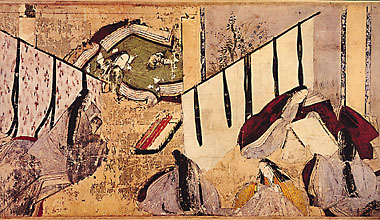

The Tale of Genji reveals the life and many loves of Prince
Genji, the Shining Prince, son of the emperor and his favorite wife.
Its style exquisitely expresses the sensitivity and emotions of
individual characters. The passion of Genji's early life yields to
the experience of retribution for past wrongs and awareness of the
vanity of this world.

As a child, Lady Murasaki often listened to the Chinese lessons that
her father, a scholar, poet, and government official, gave her brother. She picked up the language so quickly
that she began to "help" her brother when he forgot his answers.
Her learning delighted her father, but at times he would sigh with
sadness to think that a child of such talent had not been born a boy.
|